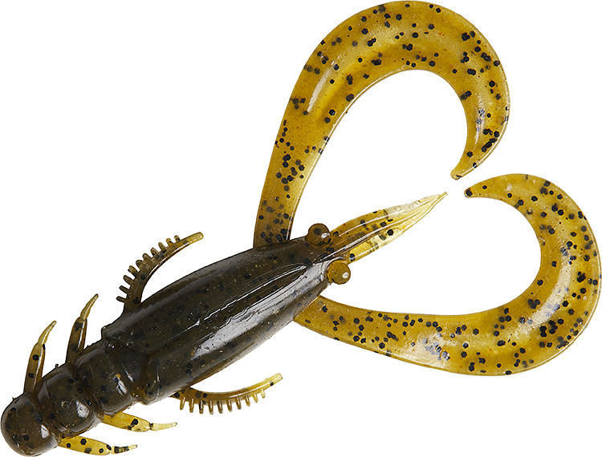
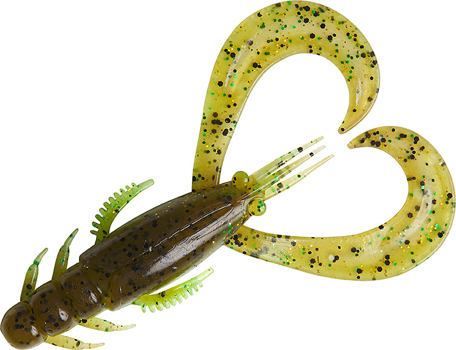
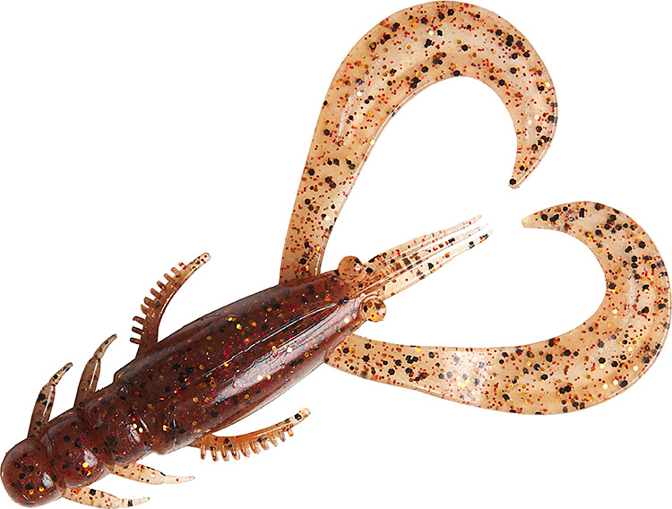
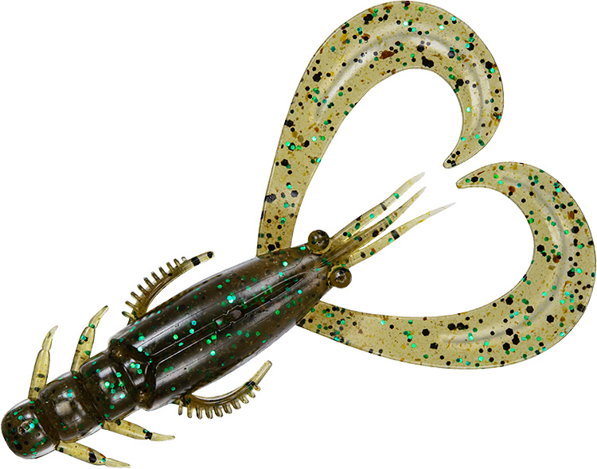
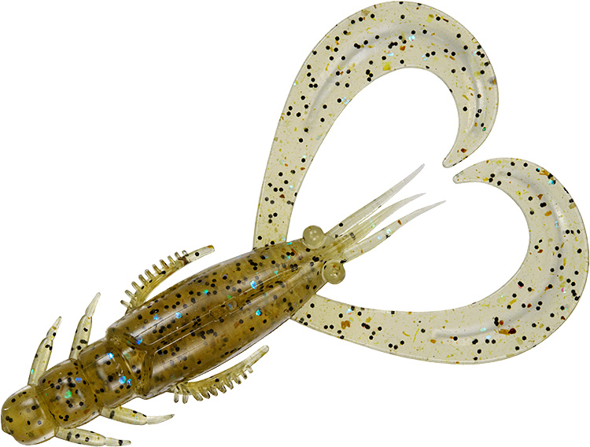
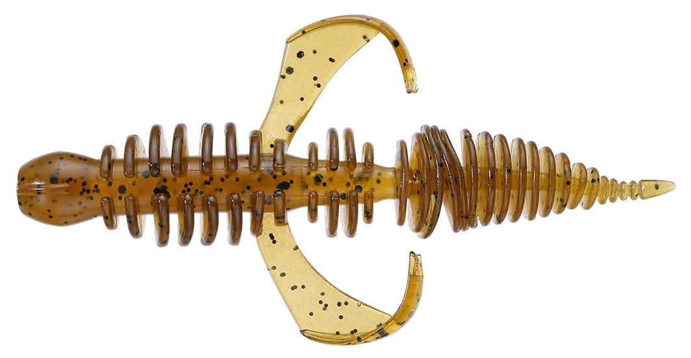
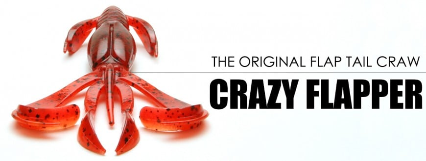
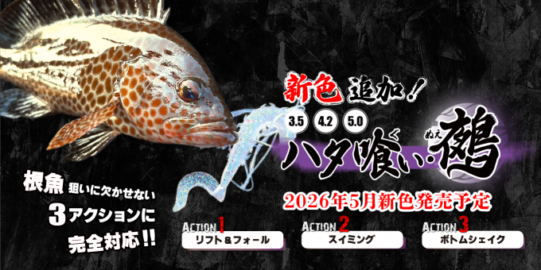

シルバーウルフ アーバンクローラー2.5
（SILVER WOLF URBAN CRAWLER 2.5）
シルバーウルフ アーバンクローラー2.5（SILVER WOLF URBAN CRAWLER 2.5）はDAIWA（ダイワ）のチニング用ワームです。
全国でブームになっているフリーリグスタイルのチニングで、第一人者の森浩平テスター（通称：もりぞー）が監修した専用ワームです。ショートバイトが多い釣りなので、フックアップに持ち込むためのアイデアが随所に盛り込まれています。DAIWA独自の集魚成分「アミノX」とエビ粉もボディ素材に配合しています。

画像出典:DAIWA公式HP
スペック
- メーカー
- DAIWA（ダイワ）
- タイプ
- チニング用ワーム（クロー系）
- サイズ
- 2.5インチ（64mm）
- 入数
- 8本
- 素材
- 塩ビ（アミノX・エビ粉配合）
- 適合フック
- STEEZ WORM HOOK WOS #2
- ターゲット
- チヌ（クロダイ）・キビレ
- 価格
- 650円（税別）
▼今すぐチェック

シルバーウルフ アーバンクローラー2.5の特徴
チヌのショートバイトをフッキングまで持ち込む工夫を詰め込んだ専用設計
-
フッキングミスを防ぐ深いクビレ
バイトの時にボディが折れ曲がって、フッキングミスを防ぐ深いクビレ。監修のもりぞー氏が最もこだわった部分。後端が傷んだら一節カットして使えるエコ仕様でもある。
-
低速でも動く3Dクレセントカーリーテール
中央部だけを凹ませた三日月形のカーリーテールで、レスポンスと強度を両立。低速でもしっかり動くので、低水温期などタフな状況で活躍する。
-
裏返しても使えるセンタースリット
チニングはワームの消耗が激しく、片面が破損したら裏返して使うことも多い。その場合でもフックセットの時にセンターラインがわかるよう、センタースリットを配置している。
-
飛距離とボディへのバイトを考えたサイドパーツ
ボディサイドのパーツはすべて順方向にして空気抵抗を減らし、オカッパリでの飛距離を確保。ボリュームのあるパーツでボディ側にバイトさせ、爪やテールだけを噛み千切られにくくしている。
シルバーウルフ アーバンクローラー2.5の使い方
フリーリグにセットしてボトムを取り、ズル引きやゆっくりしたリフト＆フォールで探るのが基本です。シンカーがボトムを叩く感触を感じながら、一定の速度で引いてくるのがコツ。
アタリがあっても乗らない時は、すぐに合わせず巻き続けて、重みが乗るまで待つのも有効です。
シルバーウルフ アーバンクローラー2.5の得意な状況
河口や港湾部、干潟などの浅いボトムで、カニ・エビを食べているチヌ・キビレを狙う状況が得意です。
低速でもカーリーテールが動くので、水温が低くて速く引けない時期や、ナイトゲームでじっくり誘いたい時にも出番があります。
ワンポイント
片面が破損したら裏返して、センタースリットを目安にフックを刺し直すと長く使えます。後端が傷んだ時は一節カットして使うこともできます。
オススメカラー
アーバンクローラーは全12色。公式の「シチュエーション別カラー選択」を参考に、使い分けやすい4色を紹介します。

グリパンチャート裏面のチャートがアピールし、濁りに強い。速いテンポで探る時にも重宝する。

エビミソレッドゴールドナイトゲームでカラーに迷ったらこれ。ナイトゲームのオールラウンダー。

淀川スペシャルグリーンパンプキンにグリーンラメをプラス。濁った状況でも存在感を出せる高実績カラー。

サンドシュリンプ砂地エリアに強いアピール弱めのナチュラル系。メインカラーで反応が落ちた時の抑えに。
画像出典:DAIWA公式HP
シルバーウルフ アーバンクローラー2.5に似ているルアー
-

コーヴァイチュー2.8インチ SMITH 詳細はこちら＞同じくフリーリグチニング専用設計。アームのカーリーで水を押したい時に。
-

クレイジーフラッパー2.8インチ KEITECH 詳細はこちら＞チニングスペシャルカラーもあるクローワーム。ウデの大きなアクションで誘いたい時に。
-

ハタ喰い・鵺 RUDIE'S 詳細はこちら＞ラバー付きの根魚用ワーム。ハタなどのロックフィッシュを狙う時に。